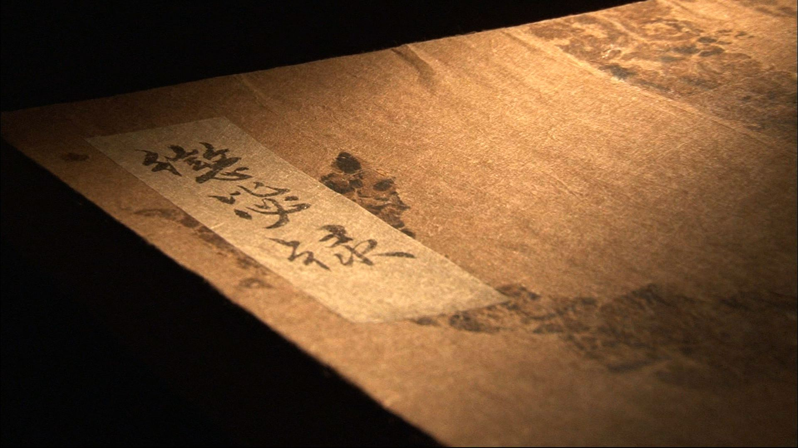

懲毖錄
豫其懲而毖役患(미리 징계하여 후환을 경계한다)
-『시경(詩經)』 소비편(小毖篇)
유비는 착한 쪼다가 아니다[임용한의 진짜 三國志_15]유비도 계획이 있었다
모욕감 느끼고 시작한 유비[임용한의 진짜三國志_14]소설에는 절대 없는 이야기
영웅들의 본격적인 리턴매치가 시작된다![임용한의 진짜 三國志_13] 조조와여포의 맞짱승부
끝없는 논란,서주공방전. [임용한의 진짜 三國志_12]조조스러운 만행인가 전술적 선택인가. 그 진실은?
쓰리 킹덤의 본격 시작. 드디어! 조조가 조조하기 시작했다[임용한의 진짜 三國志_11]조조가 서주로 간 까닭은?
조조가 탐낸 원탑 영웅. 정사 삼국지 속의 '손책' [임용한의 진짜 三國志_10] 강동의 아이돌 소패왕. 오나라의 기틀을 세우다
무력 1진, 지략 1진, 야망 1진. 모든걸 가졌던 강동의 호랑이 손견. [임용한의 진짜 三國志_09] 관운장 급 활약과 사망의 미스테리
그것이 알고싶다. [황건적 장각과 태평도의 비밀] - 그들의 정체는?* [임용한의 진짜 三國志_08] 전 중국을 뒤흔든 [황건적의 난]과 도술의 도적 [장각]
백마장군의 처참한 최후[임용한의 진짜 三國志_07] 조조 성장의 밑거름이 되다
유비의 큰형님 백마의종 공손찬[임용한의 진짜 三國志_06]소설과 다른 치열했던 공손찬의 삶
조조가 아니다. 진짜는 따로있다. 관도대전 3부. 팩트체크[임용한의 진짜 三國志_05] 나관중 창작법 전격해부
조조. 패권의 중심을 잡다. 관도대전II-영화보다 재미있다☆[임용한의 진짜 三國志_ 04]
최대세력 원소 VS 최고두뇌 조조. 관도대전1. 영화보다 재미있다☆임용한의 진짜 삼국지 [三國志_ 03]
적과의 동행. 원소 vs 원술-영화보다 재미있다☆ '임용한의 진짜 삼국지'[三國志_02]아낌없이 주는 나무- 원소Ⅱ
거대전쟁의 서막. 세력의 탄생. 원소-영화보다 재미있다 ☆임용한의 진짜 삼국지[三國志_ 01]
이 쯤에서 꼭 다시봐야 할 관도대전 3편을 한번에...!![임용한의 진짜 三國志_번외편]
[순삭밀톡]삼국지뒤집기★유비, 패왕인가? 성군인가? 유비패왕설의 진실
[순삭밀톡]삼국지뒤집기★완벽캐 제갈량이 뻥(?)캐릭터였다니!!
삼국지뒤집기16★나관중도 열폭시킨 사기캐 주유, 전격해부!(순삭밀톡)
[순삭밀톡] 삼국지뒤집기 ★ 육손 뒷담화 몰아보기
[순삭밀톡] 삼국지뒤집기 ★ 적벽대전 몰아보기
[순삭밀톡] 삼국지뒤집기 ★ 장비 몰아보기
[순삭밀톡] 삼국지뒤집기 ★ 황충 뒷담화 몰아보기
[순삭밀톡] 삼국지뒤집기★ 유비 뒷담화 몰아보기
삼국지뒤집기18★임용한박사를 겁나게 한 하후돈!(순삭밀톡)
삼국지뒤집기17★입구는 있어도 출구는 없음, 입덕하면 출구 없다는 조자룡의 묵직한 마성 비결(순삭밀톡)
[순삭밀톡]삼국지뒤집기★조조 뒷담화 몰아보기
막장이었던 임진왜란 70년 전 명나라 [중국의 역사]
[독일 역사 요약] (NEW)외유내강의 나라! 독일 역사 15분 총정리
9번째 위기를 맞은 프로 부도국, 파산의 역사! 아르헨티나 6부 최종화 [지구본연구소 시즌2 - EP.41]
정사 삼국지 총정리
삼국지보다 재미있는 정사 초한지
소련이 초강대국이 된 진짜 이유!!
왜 쿠릴 열도는 전부 다 러시아 땅이 된 걸까??
드디어 전쟁의 막이 오르다! 2개월 간의 포클랜드를 둘러싼 다툼, 아르헨티나 5부 [지구본연구소 시즌2 - EP.40]
제국의 역습 : 포클랜드 전쟁의 서막, 아르헨티나 4부 [지구본연구소 시즌2 - EP.39]
군부독재가 남긴 참혹한 역사 '더러운 전쟁', 아르헨티나 3부 [지구본연구소 시즌2 - EP.38]
왜 그들은 가난해 질 수 밖에 없었을까? 아르헨티나 2부 [지구본연구소 시즌2 - EP.37]
선진국에서 후진국으로? 대표적 백인국가, 아르헨티나 1부 [지구본연구소 시즌2 - EP.36]
발해가 우리 역사인 근거
몽골제국의 유럽 침공(2) 러시아 정벌 [몽골의 역사]
몽골제국의 유럽 침공(1) 유럽 침공의 서막(칼가 강 전투) [몽골의 역사]
한나라의 흉노 정벌기(1) : 천하를 통일한 유방, 그러나
[북유럽 신화] #6 격돌! 토르 vs 요르문간드
[북유럽 신화] #5 토르의 패배 & 악연의 시작
[북유럽 신화] #4 여자가 된 토르 | 그재무지 시리즈
[북유럽 신화] #3 묠니르의 탄생 & 로키의 세 아이 | 그재무지 시리즈
[북유럽 신화] #2 성벽 쌓는 거인과 로키 | 그재무지 시리즈
[북유럽 신화] #1 천지창조 & 신들의 전쟁 | 그재무지 시리즈
[이집트 신화] #최종화 | 그재무지 시리즈
[이집트 신화] #6 통수의 통수의 통수! | 그재무지 시리즈
[이집트 신화] #5 ♥♥ 세트 ♥ 호루스 ♥♥ | 그재무지 시리즈
[이집트 신화] #4 세트 vs 호루스, 왕권 재판 | 그재무지 시리즈
[조선왕조실록] 10분순삭 조선이야기 l 최고령임금 '1대 태조' & 처세술의 신 '2대 정종'
[5000 years of Chinese history] History of China in 10 Minutes
[영국 역사 요약] 👑영국 역사 꿀잼 10분 총정리(NEW) l 고대,중세,현대
[인도 역사 요약] 수학과 수행자의 나라, 인도 역사 15분 꿀잼 총정리(NEW) l 고대~현대
황제 유방과 국사무쌍 한신
3만으로 56만 대군을 궤멸시킨 전투, 항우의 팽성 대전
[Fabruary 12th, 2020]
계좌에 잔고가 있는 것 자체는 결코 기회비용을 발생시키는 리스크가 아니다.
매도 후 잔고가 생기자마자 심사숙고 없이 최적의 조건을 갖추지 않은 종목을 매입하는 것이야말로 큰 리스크를 발생시킨다.
그 종목에 묶여서 다른 큰 기회가 왔을 때 잡지 못하는 리스크를 감수해서는 안된다.
나에게는 언제나 12척의 판옥선만 존재한다. 단 한 척의 배도 잃어서는 안된다. 손실 없이 대승을 보장하는 전투가 아니면 시작하지 않는다.
승패를 가늠할 수 없는 전장에 직접 뛰어들지 말고, 다른 이들의 전투를 관전하며 경험을 축적하라.
[Fabruary 7th, 2020]
나는 내가 하는 일을 기록으로 남기는 사람이 아니라,
내가 기록으로 남기고 싶은 일을 하는 사람이다.
[Fabruary 3th, 2020]
1차 프로그래밍 목표: 대한민국 국민 중 100만명이 1만원을 기꺼이 지불하고
크게 만족할 수 있는 앱을 개발한다.
[Fabruary 3rd, 2020]
분별하려 애쓴다고 꼭 분별이 되는게 아니며,
분별에 무관심할 때라도 꼭 분별이 안되는 건 아니다.
모든 것이 다 달라보여도 하나의 진리는 존재한다.
그러나 양립할 수 없으며 공존하는 진실과 거짓은 하나가 될 수 없다.
천사의 탈을 쓴 악마가 존재한다는 것이
내가 악마의 탈을 써야할 이유가 되지는 않는다.
[January 28th, 2020]
일과를 설정함에 있어
중요하다 생각하는 것에 인위적으로 너무 많은 시간을 할애하지 말자.
적당량 또는 적당량 보다 적당히 초과하는 정도의 투자를
오래 유지하는 것이 중요하다.
중요하다 생각해서 인위적으로 시간을 많이 사용하면
몰입에 방해가 되고 성과의 질이 떨어진다.
자연스럽게 슈퍼몰입상태가 될 때 이를 즐기면 순간적으로 폭발적인 추진력을 얻을 수 있지만
이는 필수가 아니다.
적당히 할당된 일과들을 수행한 후에 시간이 남는다면
이미 달성한 일과들 중 더 해보고 싶은 일을 추가로 하거나
전혀 관계없는 다른 일을 자유롭게 해도 무관하다.
[January 21th, 2020]
활을 쏘기 위해서는 시위를 당겨야 하고,
화살을 더 멀리 보내려면 시위를 더 많이 당겨야 하며,
정확한 타이밍에 쏘려면 시위를 당긴채로
언제까지고 기다릴 수 있어야 한다.
[January 18th, 2020]
분산 투자의 범위는 확장되어야 한다.
확장 되어야 균형이 잡히고,
균형이 잡혀야 제대로 성장할 수 있다.
주식 종목의 분산에서 타 주식 시장으로 확장.
주식 시장의 분산에서 타 투자 시장으로 확장.
자산 투자 시장의 분산에서 비자산 투자로 확장.
비자산 투자의 일부로 나 개인의 역량 강화가 있다.
결론적으로,
프로그래밍 공부, 운동과 같은 루틴을 유지해야만 전체적인 삶의 균형이 맞춰지고,
이를 통해 주식 투자에서의 신중함과 그에 따르는 긍정적인 성과도 기대할 수 있다.
[January 14th, 2020]
내가 지금 강하고 경고하다고 느낀다면
그것은 내가 그래서가 아니라
하나님이 나의 산성으로 계시고
내가 그것을 의지하고 있는 까닭이다
[January 13th, 2020]
- 악재일 때 사고, 호재일 때 팔고
- 큰 돈으로는 가치투자, 작은 돈으로는 기술적 분석 투자
- 기술적 분석을 배우는 것은 포카를 잘 치는 방법을 배우는 것과 같다.
실력이 아무리 늘어도 결국 카지노에서의 활동 밖에는 못하며,
그 결과는 암울하다.
반면 가치투자에 전념하는 것은 카지노에 투자하는 것과 같고
결국 승리하게 되어있다.
- 빨간색에 현혹되어 끌려가는 건 불나방이고,
파란색에서 가치를 보고 다가가는 것은 식물의 뿌리다.
- 담배를 한 번 피우기 시작하면
평생 끊지 못하고 건강을 해치듯이
기술적 분석을 배워서 단기 투자를 하고
거기서 비롯되는 성공의 맛을 봐버리면
제대로 된 가치투자로부터 멀어지게 되고
결국 안정적으로 부를 이루는 기반을 세울 수 없게 된다.
- 빨간색에 기반을 두면 파란색으로 귀결되지만,
파란색에 뿌리를 두면 빨간색 꽃을 피운다.
그것이 태극의 도다.